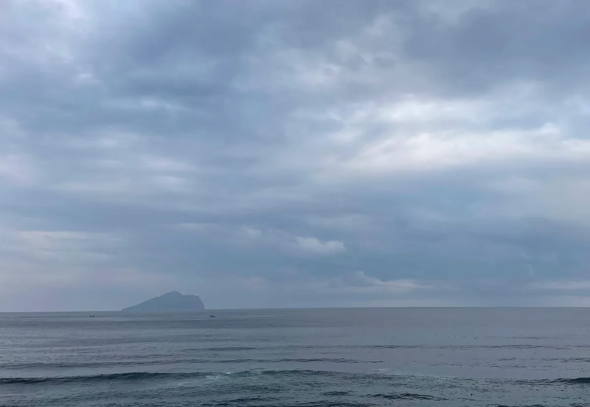

구이산섬 고래관찰 반일투어, 우스항에 내려서 뭘 먹을까?
배 타고 구이산섬을 돌기 전에 볼거리와 시즌을 확인하고, 우스항 근처 해산물집까지 챙겨보세요.
게시
이란(宜蘭) 바닷가 어디서나 보이는 구이산섬(龜山島)은 배를 타고 둘레를 돌며 고래와 돌고래를 찾는 투어로 유명해요. 배가 뜨고 내리는 터우청(頭城) 우스항(烏石港) 근처에 해산물집이 모여 있어서, 배에서 내린 뒤 바로 한 끼를 먹기 좋아요. 交通部觀光署 자료를 바탕으로 2026년 10월 기준으로 정리했어요.
01 · 구이산섬은 어떤 곳일까
바다에 떠 있는 모습이 거북(龜)을 닮아 '龜山島'라는 이름이 붙었어요. 頭城 동쪽 바다 약 10km에 떠 있는 활화산 섬이고, 이란의 상징으로 꼽혀요.

02 · 배 위에서 볼 것
고래와 돌고래 4월부터 9월까지가 배를 타고 고래와 돌고래를 보러 나가기 좋은 때예요. 바다 생물이라 매번 보장되지는 않아요.
龜山八景 섬 둘레를 돌며 기암과 바다 풍경 '龜山八景'을 보는 것이 대표 코스예요.
섬 상륙은 따로 섬 위 401高地까지는 1,706개 계단이 이어져요. 상륙 여부는 상품마다 다르니 상품 페이지를 확인하세요.
03 · 가는 법
우스항에서 출발 배는 頭城 烏石港에서 떠요.
투어 확인 일정, 포함 사항, 출발 장소와 시간은 상품 옵션마다 달라요. 예약 전에 클룩 상품 페이지에서 꼭 확인하세요.
04 · 배에서 내려 들르기 좋은 근처 맛집
우스항 바로 앞 0.2~0.5km에 해산물집 두 곳이 있고, 나머지는 2km 안팎의 터우청 쪽이에요. 아래 거리는 지도에 등록된 좌표로 잰 직선거리라 실제 이동 거리는 더 길 수 있어요.
小豪海鮮 · 해산물 · 서쪽 약 0.2km 지도에 해산물(으)로 등록된 곳이에요.
石港春帆精緻海鮮餐廳 · 해산물 · 북쪽 약 0.5km 지도에 해산물(으)로 등록된 곳이에요.
阿宗芋冰城 · 빙수 · 남서쪽 약 1.7km 지도에 빙수(으)로 등록된 곳이에요.
Drifters Pizza Pub 漂流者披薩吧 · 피자 · 남서쪽 약 1.8km 지도 메모: 매우 기억에 남는 피자펍이라며 꼭 방문해 보라고 추천.
阿茂麵攤 · 국수 · 남서쪽 약 2.1km 지도에 국수(으)로 등록된 곳이에요.
Longji Beef Noodle Restaurant · 우육면 · 남서쪽 약 2.2km 지도에 우육면(으)로 등록된 곳이에요.
Kanea廚房-餐酒小館 · 파스타 · 남서쪽 약 2.2km 지도에 파스타(으)로 등록된 곳이에요.
가게마다 쉬는 날과 영업시간이 다르니 방문 전 구글맵에 등록된 영업시간을 확인하세요.
지도에서 이란 맛집도 확인해보세요
투어 앞뒤로 들를 이란 맛집을 지도에서 함께 찜해두세요.